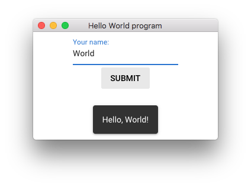
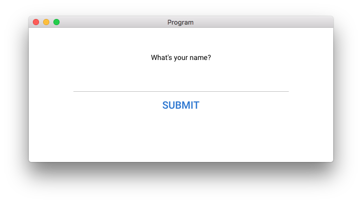

QuasarGUI¶
Quasargui is a programmer-friendly package for making modern desktop apps in Python.
Some reasons you might want to use QuasarGUI:
- It is built on a stable front-end framework, Quasar.
- It brings the advantages of Vue
- Still, you don't ever need to touch JavaScript code, everything is brought back to Python.
Hello World example¶
from quasargui import *
name = Model('')
layout = Rows([
QInput('Your name:', name),
QButton('Submit', events={
'click': lambda: layout.notify(
message=f'Hello, {name.value}!', position='bottom')
})
])
run(layout, title='Hello World program')

Let's break it down how it works.
When we change QInput, name's value is updated automatically. So, when we click on QButton, the callback function calls the window-wide fully-customizable notify with the correct name, 'World'.
Rows, QInput, and QButton (that internally correspond to Vue components) are the widgets. We communicate with Widgets there-and-back via Model's. (That is, Model's are two-way bound to the window.)
Quickstart¶
Can't wait to get started? The quickstart guide is the fastest way to get up and running. If you come from a Vue background, check out the comparison between Vue and Quasargui.
List of examples¶
A range of examples can be found in the examples directory on GitHub. These examples we describe in detail.
Hello World plus (styling example)¶
Components can be easily changed by adding a few css classes and styles.
You can see the reference of the classes on quasar.dev, for spacing, positioning, typography, visibility and breakpoints and shadows.

from quasargui import *
name = Model('')
layout = Div(
styles={
'max-width': '30em',
'margin-left': 'auto',
'margin-right': 'auto',
},
classes='q-mt-xl text-center',
children=[
"What's your name?",
QInput(model=name),
QButton('Submit',
classes='text-primary',
props={'unelevated': True, 'size': 'lg'},
events={
'click': lambda: layout.notify(
f'Hello, {name.value}!', position='bottom')
})
])
Requirements¶
This project requires pywebgui and Python 3.5+.
pip install pywebgui
pywebgui uses native renderers or Qt whichever it is available. (eg. on Mac the native renderer is cocoa)
Installation¶
pip install quasargui
Support¶
Contact me on Github.
License¶
Quasargui is licensed under MIT license.